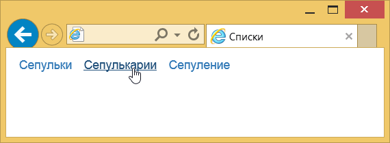
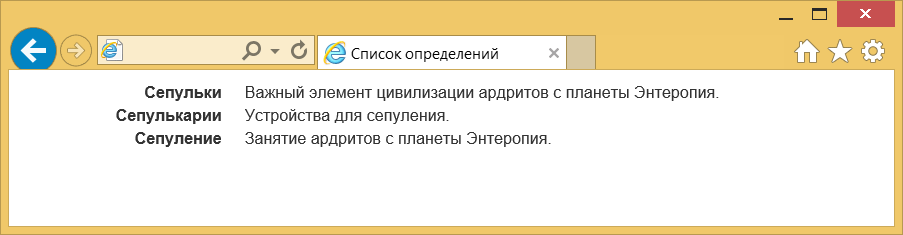
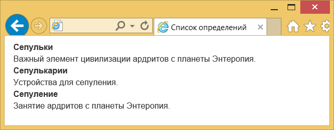

Списки
На сайтах списки применяются как по прямому назначению — для вывода именно списков, так и для создания различной навигации.
Это связано с тем, что сами элементы списков имеют строгую иерархию и позволяют делать вложенную структуру, вдобавок видом списков легко управлять через стили.
Горизонтальный список
Такой список обычно используется для создания меню, к элементу
Вот как выглядит подобное меню.
Стиль средней ссылки меняется при наведении на неё курсора.
Список определений
Список определений состоит из двух элементов — термина и его определения.
Сам список создаётся с помощью контейнера
- Сепульки
- Важный элемент цивилизации ардритов с планеты Энтеропия.
- Сепулькарии
- Устройства для сепуления.
- Сепуление
- Занятие ардритов с планеты Энтеропия.
Bootstrap предлагает сделать такой список нагляднее за счёт горизонтального расположения термина и определения.
К элементу
- Сепульки
- Важный элемент цивилизации ардритов с планеты Энтеропия.
- Сепулькарии
- Устройства для сепуления.
- Сепуление
- Занятие ардритов с планеты Энтеропия.
Результат данного примера:
Если термин слишком длинный, то он будет обрезан и к нему добавлено многоточие.
Также при уменьшении размеров окна вид списка меняется на традиционный.
